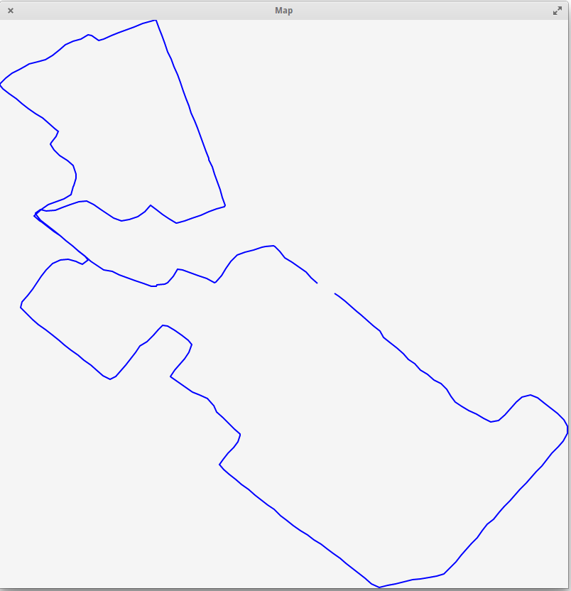

Project 3: GPS Tracks
Overview
In this project, you will write a program that reads in fitness tracker data consisting of a series of GPS locations and times, and then does some interesting processing with that data.
This project will definitely require a good understanding of everything we have learned this semester, especially structs, arrays, functions, sorting, header files, and linked lists. You can find each of those topics in the notes if you need some review.
Grading
After the initial part on reading in a text file with the track data, which everyone has to do, the project is set up as a number of features, given below. Each “feature” can be implemented independently of the other ones and in any order, although some will definitely be more challenging than others.
Your maximum possble grade will be based on the number of features you correctly implement in your program, according to the following formula:
| Features implemented | Maximum possible grade |
|---|---|
| 1 feature | 30 (F) |
| 2 features | 55 (F) |
| 3 features | 70 (C-) |
| 4 features | 85 (B) |
| 5 features | 95 (A) |
| 6 features | 105 (A+) |
Honor Policy Reminder
Be sure to review the course policy on collaboration for programming projects, which are more about the work you can do on your own and have different rules compared to homeworks and labs. In particular:
- The only help you may receive on a project is from your instructor MGSP leaders for this class, and that help must be clearly cited. In turn, you cannot provide help to any other students on this project.
- In no circumstance - project, homework or lab - may you copy code and submit it as your own work. That is the definition of plagiarism.
- For projects, you may not look at other people’s project code nor may you show your own code to others.
- You can look at online resources for general purpose C programming, but not for help writing financial simulations or anything else that is specific to the functionality required of your project.
If you have questions about any of these rules, email your instructor and ask about it. We know you want to do what’s right and we are here to help you!
Your program
Package installation
The last few features require a few external libraries in order to read XML files and display images on the screen. These libraries will be installed for you on the lab machines. In order to install them in your VM, run the command:
sudo apt-get install libxml2-dev libgtk-3-dev libcairo2-devand enter your password when prompted.
Update: If that command doesn’t work, your package lists may be out of date. In that case, you should first update your with the following pair of commands. (This might take a few minutes, but it’s a good idea to update anyway.)
sudo apt-get update
sudo apt-get dist-upgradeStarter files
You should start by downloading the file proj3.tar.gz and running tar xzvf proj3.tar.gz. That command will create a folder called proj3 with these files in it:
gps.cgps.hride1.txtride2.txtride3.txtrun1.txtrun2.txtland1.txtland2.txtgpx2txtride1.gpxride2.gpxride3.gpxrun1.gpxrun2.gpx
gps.h and gps.c are a header and implementation file that define a struct and some useful functions for GPS locations, including crucially the complicated formula to calculate the distance on the Earth’s surface between two points. You must use this library in your program, and must not change either file.
The rideX.txt and runX.txt files are plain-text “track files”, whose format is described in the next part. Your needs to read this type of file to get its input.
The landX.txt files contain GPS coordinates and names of landmarks that will be used for one of the features you are asked to implement.
The program gpx2txt is there for your convenience, so you can test your own files! It will convert any gpx file, which is a standard for most fitness watches and GPS units, to the plaintext track format we’re using for this assignment.
The .gpx files contain the same data as the plaintext track files above, but in a more complicated XML format that is commonly used in actual fitness devices to store tracks. One of the features asks you to read this kind of file in addition to the plain-text format.
Track file format
Tracks are represented as a series of waypoints, each of which contains a GPS location (longitude and latitude) and a timestamp (date and time, down to the second).
The plaintext track files such as run1.txt that your program must be able to read and process start with an integer that represents the number of waypoints in the file, followed by a single line for each waypoint.
Each waypoint starts with the latitude and longitude in degrees, as decimal numbers to fairly high precision. This is followed by a date and time in the format YYYY-MM-DD HH:MM:SS.
Important: Many parts of the date and time start with a leading 0, like 2017-04-09 for April 9. You have to use the %d format string to read in this kind of integer. (If you use %i instead, it takes the 0 to indicate that the number is “octal”, or base 8 — definitely not what you want!)
Dealing with GPS coordinates
The gps.h header file and gps.c function definitions file contain a struct gpsco and useful functions for storing and finding the distance between GPS coordinates.
The formula for determining the distance between two GPS coordinates is a little complicated since our planet is round. You should be happy to use the gps_dist function which deals with this so you don’t have to!
Note that the gpsco struct stores coordinates in radians, even though you will read them in in degrees. There are helper functions to do the conversion for you. You may not change the files gps.h and gps.c; you must use them as-is.
Dealing with times
The timestamps for each waypoint are fully specified in the format YYYY-MM-DD HH:MM:SS. In order to easily deal with these, you might want to make use of some things in the standard header library time.h.
The easiest thing will probably be to convert all date/time entries to a single number, the number of seconds since the Unix “epoch” of January 1, 1970. That number by itself isn’t so meaningful, but taking the differnce between two of those will give you the number of seconds between them, which is definitely something that will be useful for you!
You will most likely want to check out the tm struct and the functions mktime and difftime.
(And don’t be intimidated by the time_t type; you can safely cast this to an int as long as it’s not too large.)
Program structure
No matter which features you implement, your program will start by reading a track file. Your program should immediately open this file and read in the waypoints in that file, saving them into an array or linked list of structs.
Next your program will follow a series of commands. (Most of the features ask you to add the functionality for some command.) The quit command is used to exit your program.
(This is similar to how lab 9 works, at a high level.)
For example:
roche@ubuntu$./trackFile:ride1.txtOpened ride1.txt with 1814 waypointscommand:quit
Features
Feature 1: Statistics
Implement the command stats, which reports the total distance, total time, average speed in miles per hour, and average pace in minutes per mile.
Examples:
roche@ubuntu$./trackFile:run2.txtOpened run2.txt with 327 waypointscommand:statsTotal time: 33 minutes, 51 secondsTotal distance: 4.02977 milesAverage speed: 7.14286 mphAverage pace: 8 minutes, 23.9995 seconds per milecommand:quit
roche@ubuntu$./trackFile:ride1.txtOpened ride1.txt with 1814 waypointscommand:statsTotal time: 1 hours, 14 minutes, 9 secondsTotal distance: 25.5691 milesAverage speed: 20.6897 mphAverage pace: 2 minutes, 53.9994 seconds per milecommand:quit
Notes:
- The total distance is the sum of the distances between each pair of consecutive waypoints.
- The average speed is the total distance divided by the total time (converted to hours so you get miles per hour).
- The average pace is the total time divided by the total distance.
- Print the times for total time and average pace as “X hours, Y minutes, Z seconds”. Except if the time is less than 1 hour, then just pring “Y minutes, Z seconds”.
Feature 2: Landmarks
Implement a landmarks function that reads in a file of landmarks and reports the minimum distance on the track to each landmark, starting with the closest landmark.
The landmarks file will start with a line containing the number of landmarks, followed by lines that contain the latitude, longitude, and name of each landmark.
The distance to each landmark is defined as the shortest distance from any waypoint in the track to that landmark. In particular, the closest waypoint might be different for each landmark, and your program should account for that.
Examples:
roche@ubuntu$./trackFile:run1.txtOpened run1.txt with 760 waypointscommand:landmarks land2.txtLondon_Town 1.61996 milesThomas_Point 5.2619 milesUSNA 5.78583 milesMount_Misery 9.33067 milesNSA 16.673 milesSmith_Island 68.6522 milescommand:quit
roche@ubuntu$./trackFile:run2.txtOpened run2.txt with 327 waypointscommand:landmarks land2.txtUSNA 0.144812 milesLondon_Town 3.94861 milesThomas_Point 4.96613 milesMount_Misery 5.35822 milesNSA 16.9579 milesSmith_Island 72.8357 milescommand:quit
Feature 3: Fastest mile
Implement a fastest function that prompts for a distance (in miles) and then reports the fastest time within the track for that distance.
The fastest time for that distance comes from the least time between two waypoints, such that the cumulative distance between those waypoints is at least the distance that was entered. And by “cumulative distance” I mean the sum of the distances between all intermediate waypoints.
So for example, if the total distance of the track is 4 miles, then the fastest time for 4 miles would just be the total time for that entire track. But there would be many, many possibilities for the fastest 1 mile within that 4 mile track.
Examples:
roche@ubuntu$./trackFile:ride3.txtOpened ride3.txt with 13188 waypointscommand:fastest 0.550 secondscommand: fastest 1029 minutes, 56 secondscommand: fastest 403 hours, 5 minutes, 10 secondscommand:quit
roche@ubuntu$./trackFile:run1.txtOpened run1.txt with 760 waypointscommand:fastest 17 minutes, 9 secondscommand:fastest 101 hours, 22 minutes, 16 secondscommand:quit
Feature 4: Linked list storage
You should first try reading in the track as an array of waypoint structs. (You have to make up the waypoint struct yourself!) This should be pretty straightforward to do since the plaintext track files start with the number of waypoints in the file.
To implement this feature, you have to store tracks as a linked list of waypoints instead. This will also mean changing any other functions you have to work with the linked lists also.
There are explicit tests for this feature, but to document that you have done it (and make sure your instructor looks for it to give you credit), add a function linked to your track program that just prints out the word “yes”, as in:
roche@ubuntu$./trackFile:run1.txtOpened run1.txt with 760 waypointscommand:linkedyescommand:quit
Feature 5: Visual picture
Implement a visual function that displays a visual depiction of the current track in a new window. You don’t need to overlay it over any actual maps, just make a line drawing with a line between each pair of consecutive points in the track.
You can check any of the gpx files in the sample files (which match with the corresponding txt file) by uploading to websites such as http://www.gpsvisualizer.com/. Your image will be simpler because it’s not overlaid on Google Maps, but this should give you an idea of what the shape should look like.
In order to pop up a window in your program, you will use the GTK+ library along with a drawing library called Cairo.
These are really big libraries that are used to create many Linux applications, and using them and reading the documentation can be difficult. That’s part of what this assignment is testing!
To help get you started, check out this example C program that opens a window in GTK and draws a line in the window.
To compile your program with GTK+, you will have to tell gcc where to find the library files! Fortunately there is a tool called pkg-config that can help with this. Here’s how to compile with the program above:
gcc $(pkg-config --cflags gtk+-3.0) gtkexample.c $(pkg-config --libs gtk+-3.0) -o gtkexampleNotes:
- Your drawing area should be 800x800 pixels.
- In GTK+, the pixel (0,0) is at the top-left of the area. Play around with the example to get a sense of the pixel orientation.
- Use whatever colors or thicknesses you like.
- You will have to first find the “bounding box” of what is the minimum and maximum longitude and latitude in your track.
- Then you’ll have to convert each longitude and latitude so that they correspond to pixels in the 800x800 grid, and draw them! So the leftmost waypoint on the track should have pixel x value 0, the rightmost waypoint should have pixel x value 799, and similarly for the topmost and bottommost waypoints.
- Your program should go back to asking for the
command:after the user closes the GTK+ window. - Orient the map with north pointing up. You can assume the path doesn’t cross over the north or south pole, or the anti-meridian. (And you don’t have to account for the curvature of the globe here either!)
Here is an example run from the command line:
roche@ubuntu$./trackFile:run2.txtOpened run2.txt with 327 waypointscommand:visualcommand:quit
Which should result in the following window being shown:

Feature 6: GPX file input
Modify your program so that if the user enters a filename that ends with .gpx, then an alternate format is accepted.
GPX is a real file format used by many fitness tracking apps and devices. If you have a Garmin or similar device, you can download any of your tracks as .gpx files. The full specs are here, but since we just want the location and time for each waypoint, it will be a bit easier.
The file format for GPX files is called XML, and it’s similar to HTML if you remember that from your SY110 class. You will use a standard C library called libxml2 to help you read the GPX files. The documentation on libxml2 is here and in particular you will be most interested in the tree section.
The libxml2 library parses files as a “tree” of XML elements, which are naturally nested inside each other. Each part of the XML has some “attributes” and some “children”. For example, in the following XML:
<outer>
<inner something="cool">
<item1>Item 1 contents</item1>
<item2>Item 2 contents</item2>
</inner>
</outer>There is one “root” element with name outer, which contains one child. That child has name inner and it also has one attribute with name something. The inner element has two children with names item1 and item2, and they each have some contents.
This example program will read in an XML file like the small example above and report on the various elements and attributes. To compile it, you have to type -I/usr/include/libxml2 at the beginning of the compilation command and -lxml2 at the end, like
gcc -I/usr/include/libxml2 xmlexample.c -lxml2 -o xmlexampleYou can look at any of the sample gpx files provided to you above, to see how that file format works. Basically the root element is gpx, which has a child called trk, and the trk element has a child called trkseg, which contains the actual waypoints you care about. Each element in trkseg is a trkpt with some attributes and children that specify the latitude, longitude, and time for that waypoint, in order.
All of those elements also might contain some extra information. Your program should ignore any extra information and just try to get the waypoint information for the track, and save that in the same way you have saved the plaintext track information from before.
I am not telling you exactly how to do everything here. We have not used anything like libxml in class. Part of your assignment is to figure this out! But please don’t hesitate to ask your instructor for help whenever you aren’t making good progress.
Of course I hope this goes without saying, but you may not assume that the same file with a .txt extension exists. You really have to read and process the gpx file!
Examples:
roche@ubuntu$./trackFile:ride1.gpxOpened ride1.gpx with 1814 waypointscommand:quit
roche@ubuntu$./trackFile:ride2.gpxOpened ride2.gpx with 4584 waypointscommand:quit
roche@ubuntu$./trackFile:ride3.gpxOpened ride3.gpx with 13188 waypointscommand:quit